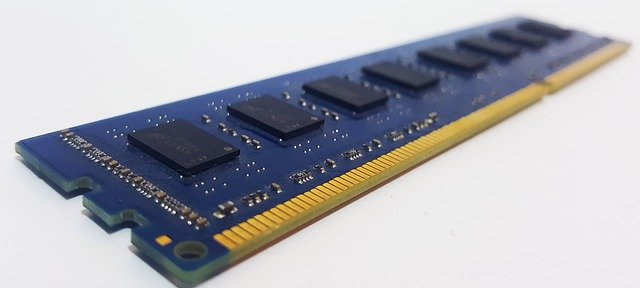

Ram minnen sitter på moderkortet och den innehåller instruktioner och data. Den är gjort av minnesceller.
Den används för tillfälligt lagring så att om du skulle stånga av datorn så skulle
datan försvinna, den lagrar datan som processorn använder just då.
Det finns två olika typer av storlekar och de kallas för dimm och so-dimm. Den nyaste
versionen av ram minnen kallas för ddr4. Skillnaen mellan den och den gammla är att
ddr4 är snabbara. Du måste ha en moderkort som har stöd for antingen ddr4 eller
ddr3 för att den sak kunna fungera för att om du har en ddr3 men din moderkort har
stöd för ddr4 så kommer den inte fungera. Ju mer ram minne du har desto snabbare
kommer det gå att hantera flera program samtidigt, om du har en ram minne som inte
kan hantera många program samtidigt så kommer datorn vara långsammare ju flera
programmer du har öppen. De som bara surfar på nätet använder ibland en ram minne på
4 gigabyte som är den minsta ram minnen idag men om du ska ha flera programmer öppen
och spelar datorspel så behöver du en ram minne på minnst 16 gigabyte.